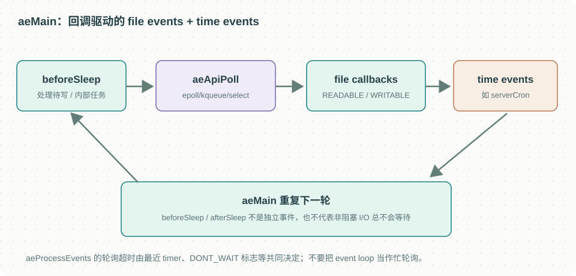
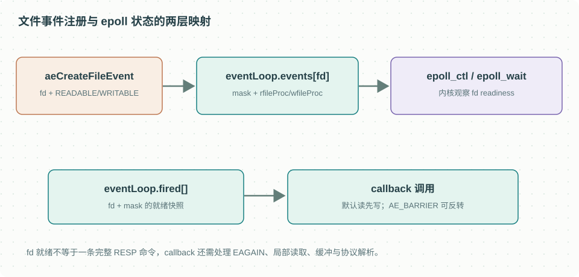

Chapter 13 / Redis 7.2.4 Source Anatomy
文件事件与 Reactor：从 fd 就绪到 Redis 命令回调
完整追踪 aeMain、aeProcessEvents、aeCreateFileEvent、epoll/kqueue 后端及 AE_BARRIER 的真实行为与边界。
为什么 Redis 不为每个连接开一个命令执行线程？
一台 Redis 可以同时保持许多 TCP 连接，但同时可读的连接不一定很多。若每个连接对应一条专用线程，资源成本和调度复杂度随连接数上升。另一方面，单线程逐个阻塞式 read 也不行：一个没有数据的客户端会使其他客户端无法获得服务。Reactor（反应器）把“哪些连接当前准备好读/写”交给操作系统的 I/O 多路复用机制，Redis 则把 fd 就绪转换成应用回调。
Redis 7.2.4 的事件循环核心在 ae.h 和 ae.c。主流程不是持续轮询每个连接的空读，而是在 aeApiPoll() 中等待操作系统通知，获得 fd 和事件 mask 后执行注册的回调。这里讨论的是事件驱动的 I/O 调度，不是说 Redis 所有操作都能异步执行，也不等于此版本完全不使用其他线程或后台子进程。
先完整画一遍 aeMain 和 aeProcessEvents

aeMain() 不断调用 aeProcessEvents(eventLoop, AE_ALL_EVENTS | AE_CALL_BEFORE_SLEEP | AE_CALL_AFTER_SLEEP)。当开启时间事件，循环会遍历时间事件列表计算最近期限，把它转为 poll 超时；文件事件就绪时，通过 eventLoop.fired[] 依次分发对应的读取或写入回调。文件回调执行后还会处理到期时间事件。
/* Redis 7.2.4 aeMain：简化后的真实结构 */
void aeMain(aeEventLoop *el) {
el->stop = 0;
while (!el->stop) {
aeProcessEvents(el,
AE_ALL_EVENTS |
AE_CALL_BEFORE_SLEEP |
AE_CALL_AFTER_SLEEP);
}
}
/* aeProcessEvents 内：
* beforeSleep -> aeApiPoll -> afterSleep
* -> fired file event callbacks -> processTimeEvents
*/beforeSleep 和 afterSleep 是应用层挂钩，位于 I/O 复用等待的两侧；它们不是从操作系统“冒出来”的 fd 事件。AE_DONT_WAIT 或连接类型待处理数据可以让本轮不进入阻塞等待。即便 poll 等待了较长时间，也不等于 Redis 主线程死循环占满 CPU。
演示静态机制与取舍，不调用 Redis 服务器。
一个 fd 的两个面孔：events[fd] 与 epoll 状态
Redis 在 aeCreateFileEvent() 中对给定 fd 注册 AE_READABLE 或 AE_WRITABLE，同时把回调指针记录在 aeFileEvent 中。实现会调用对应平台的 aeApiAddEvent() 告诉内核希望观察什么，再用 events[fd].mask 保存应用侧的当前兴趣状态。这不是“fd 变成 Redis 的一个线程”；是两份状态共同决定就绪之后由谁处理。

当内核返回“fd 可读”，只代表 socket 的读操作目前有条件取得一些字节，不代表一条 RESP 命令已完整到达。一个 TCP read 可能只得到 RESP 帧的一部分，也可能取得多个完整命令。因此读取回调后还需缓冲区、请求长度字段与解析状态机。AE_WRITABLE 也只意味着尝试写入的条件成立，不能保证所有回复一次发送完毕。
| 应用层结构 | 保存内容 | 边界 |
|---|---|---|
aeEventLoop.events[fd] | mask、rfileProc、wfileProc、clientData | 按 fd 索引的本地回调状态 |
aeEventLoop.fired[] | 本轮返回的 fd + mask | 事件就绪的快照，非应用命令队列 |
aeApiPoll() | 平台 I/O poll 返回就绪数 | 内核不知道 Redis 命令语义 |
AE_BARRIER | 必要时改变读/写回调调用次序 | 不是 mutex，也不是内存屏障 |
后端选择：Redis 7.2.4 没有强制使用 epoll
src/ae.c 使用编译期宏选择可用的多路复用实现：在对应环境下可选择 event ports、Linux epoll、BSD/macOS kqueue，最后还有 select 后端。ae_epoll.c 的 aeApiCreate()、aeApiAddEvent() 与 aeApiPoll() 把 Redis 统一的 READABLE/WRITABLE 掩码映射成 epoll 的兴趣和就绪标记。不同系统可运行不同实现，不能把 Linux 特定结构写成全平台通用。
在 Redis 7.2.4 的 ae.c 中，后端是以条件编译包含 ae_epoll.c 等文件，不是运行时根据字符串任意切换的可插拔插件框架。旧章节引入的较新版本 io_uring 描述不属于本章固定源码版本，避免将未经核验的新特性夹在 7.2.4 epoll 主路径中。
# Linux 的示例；macOS/BSD 可能显示 kqueue
./src/redis-cli -p 6390 INFO server | grep -E 'redis_version|multiplexing_api'
# 再到固定源码中核对：
grep -n 'HAVE_EPOLL\|HAVE_KQUEUE\|aeApiPoll' src/ae.c src/ae_epoll.c预期 Redis 版本是 7.2.4，而 multiplexing_api 的值取决于系统和构建配置。若没有 Linux epoll，输出不是 epoll 并非功能缺陷。
AE_BARRIER 与回调重入：细读两个容易忽略的分支
通常，aeProcessEvents() 对同一 fd 先触发可读回调，再触发可写回调。这使 Redis 有机会在解析客户端命令后立即发送回复；但是当设置 AE_BARRIER 时可反转顺序，避免在某些要求刷盘等前置动作的场景里过早进行写回。这是一个回调次序条件，不是对“所有服务器写入”的通用持久化保证。
另一个细节是回调本身可能删除事件或调整事件数组，故文件回调之间需要重新读取 fe 并核对掩码。此外，如果同一回调函数同时注册为读/写处理器，Redis 会有避免本轮同一函数重复调用的检查。理解这种防御性逻辑，比只记住“epoll 有 LT/ET 模式”更能帮助调试奇怪的客户端事件。
最小验证：多个客户端共用一个事件循环
启动隔离服务端后，同时打开三个终端。一个客户端用 BLPOP 等待无数据的列表，第二个客户端持续 PING，第三个向列表写入值，观察等待中的客户端被恢复。这个实验也能和第 10 章的 blocked.c 状态机建立对应。
# 终端 A：服务端
./src/redis-server --bind 127.0.0.1 --port 6390 --save "" --appendonly no
# 终端 B：
./src/redis-cli -p 6390 BLPOP reactor:queue 0
# 终端 C（B 仍等待时）：
./src/redis-cli -p 6390 PING
./src/redis-cli -p 6390 LPUSH reactor:queue item
# B 会返回 reactor:queue / item
# 实验结束
./src/redis-cli -p 6390 SHUTDOWN NOSAVEPING 仍能返回 PONG，表明被挂起的只是等待列表元素的客户端命令状态；这个结果本身不能证明所有命令永远不阻塞主线程。可以在 GDB 的 aeProcessEvents()、readQueryFromClient() 设置断点，观察实际输入如何使客户端回调触发。
Reactor 解决 fd 调度，不负责所有成本
事件循环能同时管理大量闲置连接，但复杂 Lua 脚本、大范围结果集、慢系统调用等仍可能造成主线程长时间占用。文件事件和时间事件在主线程主路径中串行回调，不能用“非阻塞 socket”直接推导“应用层所有操作非阻塞”。下一章继续研究另一半调度：到期时间事件、周期任务和 beforeSleep() 如何与文件事件交织。
固定版本源码与参考
源码链接锁定 Redis 7.2.4；操作系统选择、运行配置、工作负载及后续 Redis 版本均可能改变部分细节。